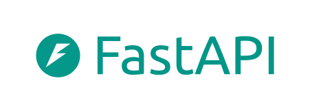
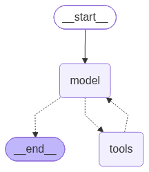

Python que piensa
Agentes de analítica con LangChain y LangGraph
Ricardo Robayo
Sociedad Ecuatoriana de Estadística · Python Weekend · 7 de octubre de 2026
La ruta: cuatro etapas
Ahora: etapa 1
El LLM básico


- Qué es un LLM
- De dónde lo traigo
- Con qué frameworks se orquesta
- Cuánto cuesta
01_llm_basico
LangChain
- Cómo trabajar sobre nuestros datos
- Cómo optimizar el costo
- Tools para ejecutar tareas
02_langchain
LangGraph
- El agente: un ciclo
- La memoria por hilo
- Verificar
03_langgraph
API y front


- El agente como servicio
- Un chat para usarlo
05_api · 06_front
El LLM básico
Qué es un modelo de lenguaje, de dónde se trae y cuánto cuesta cada pregunta.
Un LLM predice el siguiente pedazo de texto
Lo que es
Un programa que completa texto a partir de lo que leyó al entrenarse.
Vive en un servidor del proveedor y se le habla por internet, con una key.
Se cobra por token (≈ 4 caracteres): entrada y salida, por separado.
Lo que no puede
"¿Qué fecha es hoy?" → "10 de junio de 2024". No tiene reloj.
"¿Cuánto se pagó en hospitalización en 2009?" → pide que le pasemos los datos. La base dice 245 512 790.
Para responder sobre nuestra base necesita contexto y una herramienta.
¿De dónde traigo el modelo? ¿Con qué construyo el agente?
| Proveedor | El modelo: qué necesito | Su framework de agentes |
|---|---|---|
| Azure AI Foundry | Deployment, endpoint y key. El dato no sale de tu nube | Microsoft Agent Framework · .NET y Python |
| OpenAI | Una key y el nombre del modelo | OpenAI Agents SDK |
| Claude (Anthropic) | Una key y el nombre del modelo | Claude Agent SDK |
 Google (Gemini) Google (Gemini) | Vertex AI o una key de Gemini | Agent Development Kit (ADK) |
Para qué sirve cada uno
- LangChain: piezas para conectar modelos.
- LangGraph: orquestar agentes con memoria.
Beneficios
- Cambiar de modelo es cambiar una línea.
- Estado y memoria por conversación.
- El flujo es un grafo: ciclos, reintentos y control humano.
- Código abierto y trazas con LangSmith.
Quién lo usa en producción
- Klarna: asistente para 85 millones de usuarios, 80 % menos tiempo de resolución.
- LinkedIn: reclutador con agentes jerárquicos.
- Uber: migraciones de código y generación de pruebas.
- Replit y Elastic: agente de código y asistente de seguridad.
¿Cuánto cuesta cada proveedor?
Lo que cobra cada proveedor por cada millón de tokens: los que el modelo lee (tu pregunta y el contexto) y los que escribe (su respuesta). Un token son unos 4 caracteres.
| Gama | Anthropic | OpenAI | Google |
|---|---|---|---|
| Altael más capaz | Claude Fable 5.1Leer: USD 10Escribir: USD 50 | GPT-6 AstraLeer: USD 10Escribir: USD 50 | — |
| Mediael de todos los días | Claude Sonnet 5.5Leer: USD 2Escribir: USD 10 | GPT-6.1 SolLeer: USD 2Escribir: USD 10 | Gemini 3.1 ProLeer: USD 2Escribir: USD 12 |
| Económicavolumen y velocidad | Claude Haiku 4.5Leer: USD 1Escribir: USD 5 | GPT-6 LunaLeer: USD 0,10Escribir: USD 0,50 | Gemini 3.8 FlashLeer: USD 0,75Escribir: USD 3,75 |
Ejemplo: con Sonnet 5.5, leer un millón de tokens cuesta USD 2 y escribir un millón, USD 10. Una pregunta normal usa unos pocos miles: cuesta fracciones de centavo.
Mismo precio de entrada
En la gama media los tres cobran 2 USD por millón de tokens leídos. La diferencia está en la salida y en cuánto "piensa" cada modelo antes de responder.
Seguir instrucciones
En la Arena, la familia Claude ocupa 10 de los 11 primeros puestos. En la gama media, Sonnet 5.5 y GPT-6.1 Sol empatan dentro del margen.
Pensar también se cobra
En el notebook, la misma pregunta costó ~8 veces más con Claude que con gpt-4.1: razona antes de responder, y eso se cobra como salida.
La ruta: cuatro etapas
Ahora: etapa 2
El LLM básico
- Qué es un LLM
- De dónde lo traigo
- Con qué frameworks se orquesta
- Cuánto cuesta
01_llm_basico
LangChain
- Cómo trabajar sobre nuestros datos
- Cómo optimizar el costo
- Tools para ejecutar tareas
02_langchain
LangGraph
- El agente: un ciclo
- La memoria por hilo
- Verificar
03_langgraph
API y front
- El agente como servicio
- Un chat para usarlo
05_api · 06_front
LangChain
El LLM escribe el SQL; nuestro código lo ejecuta. Lo que decide si acierta es el contexto que le damos.
¿Qué es LangChain?
Una librería de código abierto con las piezas para construir aplicaciones con LLMs: conectarse a cualquier proveedor, armar prompts, darle herramientas al modelo, encadenar pasos y recordar conversaciones. No es el agente: es de lo que está hecho el agente.
| Paquete | Para qué sirve | En la charla |
|---|---|---|
langchain-openai · langchain-anthropic | Conectarse a cada proveedor de modelos (ChatOpenAI, ChatAnthropic) | 01 · 02 · 03 |
langchain_core.messages | La conversación: SystemMessage, HumanMessage, AIMessage | 01 · 02 |
langchain_core.prompts | Plantillas de prompt con huecos (ChatPromptTemplate) | 02 |
langchain_core.tools | Convertir una función en una acción que el modelo puede pedir (@tool) | 02 · 03 |
langchain_core.runnables | Encadenar pasos con | (RunnablePassthrough) | 02 |
langchain.agents | El agente ya armado: el bucle modelo ⇄ tools (create_agent) | 03 |
langgraph.checkpoint | Memoria: guardar cada conversación por hilo (InMemorySaver) | 03 |
| Loaders · splitters · embeddings · vector stores | Indexación: leer documentos, partirlos y buscar lo pertinente | No hizo falta |
langsmith | Trazas: ver qué hizo el agente, paso a paso, y cuánto costó | Siguiente paso |
La anatomía de un invoke
from langchain_openai import ChatOpenAI
from langchain_core.messages import SystemMessage, HumanMessage
# 1. El modelo
modelo = ChatOpenAI(base_url=..., api_key=..., model="gpt-4.1")
# 2. La conversación: una lista de mensajes
respuesta = modelo.invoke([
SystemMessage("Eres un analista de siniestralidad."),
HumanMessage("¿Cuánto se pagó en hospitalización en 2009?"),
])
# 3. La respuesta
respuesta.text # lo que escribió
respuesta.usage_metadata # los tokens que usó: el costo
| Mensaje | Quién habla |
|---|---|
SystemMessage | Las instrucciones de fondo: quién debe ser el modelo y cómo responder |
HumanMessage | La persona: la pregunta |
AIMessage | El modelo: su respuesta, o un pedido de tool |
ToolMessage | Nuestro código: el resultado de una tool |
El modelo solo sabe lo que va en la lista. La memoria es volver a mandarla.
Cómo trabajar sobre nuestros datos: un RAG
RAG (generación aumentada con recuperación): el modelo no conoce nuestros datos, así que antes de responder le damos el conocimiento que le falta y él lo usa para escribir la consulta.
La base: CMS DE-SynPUF
Reclamos médicos de Medicare (EE. UU.), sintéticos y de dominio público, publicados por el CMS para construir y probar herramientas y para enseñar.
Se descarga gratis en cms.gov.
Lo que usa el agente: la sábana
656 147 reclamos, 25 columnas, 2008 y 2009. Una fila por reclamo, hospitalario y ambulatorio juntos.
Un caso: una afiliada de Oregón, 69 años, 4 reclamos en 2009. La aseguradora pagó 3 160 y la atención costó 4 278.
El conocimiento del negocio: el diccionario
Para capturar ese conocimiento levantamos un diccionario de variables
(diccionario_sabana.yaml):
- Qué significa cada una de las 25 columnas.
- Qué categorías tiene: los valores exactos.
- Cuándo usar una u otra:
monto_pagadoomonto_total. - 7 trampas del dato: lo que hace fallar una consulta que "corre bien".
- 10 consultas de ejemplo: la pregunta, el SQL y el resultado verificado.
columnas:
ambito: {valores: [Hospitalario, Ambulatorio],
desc: "Hospitalario = internación"}
monto_pagado: {desc: "Lo que pagó la aseguradora.
Métrica de costo POR DEFECTO."}
monto_total: {desc: "Costo completo de la atención"}
consultas_ejemplo:
- pregunta: ¿Cuánto se pagó en hospitalización en 2009?
sql: |
SELECT sum(monto_pagado) AS pagado
FROM sabana
WHERE ambito = 'Hospitalario' AND anio = 2009;
resultado: "245 512 790,00"
Sin diccionario y con diccionario
Mismo modelo, misma pregunta. Lo único que cambia es el contexto que recibe.
Escenario 1 · solo los nombres de las columnas
WHERE ambito = 'hospitalización'Resultado: None. El SQL corre… y responde mal.
Escenario 2 · con el diccionario
WHERE ambito = 'Hospitalario'Resultado: 245 512 790 ✓
El agente no falla por el modelo: falla por no saber qué significa cada columna.
Optimizar el costo: la caché del prompt
El diccionario hace que el SQL salga bien, pero viaja entero en cada pregunta y se cobra cada vez. La caché es la optimización: el proveedor recuerda el inicio del prompt y lo cobra más barato.
| Escenario | Tokens de entrada | De caché | Con caché | Sin caché | Ahorro |
|---|---|---|---|---|---|
| 1. Sin diccionario | 161 | 0 | USD 0,000658 | 0,000658 | 0 % |
| 2. Con diccionario | 3 609 | 3 584 | USD 0,002090 | 0,007466 | 72,0 % |
| 3. Con diccionario, en caché | 3 610 | 3 584 | USD 0,002124 | 0,007500 | 71,7 % |
- El proveedor guarda el inicio del prompt (instrucciones + diccionario). Si la siguiente llamada empieza igual, esa parte cuesta 0,50 en vez de 2,00 por millón de tokens (gpt-4.1).
- La pregunta va al final: puede cambiar sin romper la caché. Un cambio antes de ella, y se pierde.
El LLM escribe, nuestro código ejecuta
cadena_completa = (
RunnablePassthrough.assign(respuesta_sql=plantilla | foundry) # 1. escribe el SQL
| RunnablePassthrough.assign(sql=...) # 2. lo limpia
| RunnablePassthrough.assign(filas=lambda d: ejecutar_sql.invoke(...)) # 3. la tool lo ejecuta
| RunnablePassthrough.assign(respuesta_final=plantilla_redaccion | foundry) # 4. redacta
)
La forma rápida: todo en una sola llamada. Redactar cuesta casi nada (114 tokens, USD 0,000476): el peso está en el diccionario.
La ruta: cuatro etapas
Ahora: etapa 3
El LLM básico
- Qué es un LLM
- De dónde lo traigo
- Con qué frameworks se orquesta
- Cuánto cuesta
01_llm_basico
LangChain
- Cómo trabajar sobre nuestros datos
- Cómo optimizar el costo
- Tools para ejecutar tareas
02_langchain
LangGraph
- El agente: un ciclo
- La memoria por hilo
- Verificar
03_langgraph
API y front
- El agente como servicio
- Un chat para usarlo
05_api · 06_front
LangGraph
El agente es un ciclo: el modelo decide cuántas consultas hacer. La memoria guarda cada conversación.
LangGraph es el framework para orquestar agentes: arma el trabajo como un grafo de pasos que puede repetirse, decide qué sigue en cada momento y guarda la memoria de cada conversación.
Un hilo, cuatro pasos, cada uno abre el anterior
| Paso | Pregunta (corta: el hilo recuerda) | Consultas |
|---|---|---|
| 1 | ¿Cómo cambió el costo ambulatorio? General, por sexo y por raza, cada una por separado | 3 |
| 2 | Donde está la mayor variación, ábrelo por grupo etario | 1 |
| 3 | En el grupo etario que más creció, ¿en qué grupos de enfermedad? | 1 |
| 4 | ¿Cuál es el hallazgo principal para un gerente? | 0 |
Esto ya es un agente

Tiene la capacidad de razonar qué necesita y cuándo lo necesita. Así funciona cuando le hacemos una pregunta:
- __start__ · llega la pregunta.
- model · el modelo piensa: ¿me faltan datos?
- tools · si le faltan, pide una consulta SQL; nuestro código la ejecuta y le devuelve el resultado.
- Vuelve a model, y repite las veces que haga falta: en el paso 1 decidió hacer 3 consultas.
- __end__ · cuando ya tiene lo que necesita, responde.
Las líneas punteadas son decisiones del modelo, no de nuestro código. El checkpointer guarda cada vuelta en el hilo: por eso el paso 4 respondió sin consultar nada.
La ruta: cuatro etapas
Ahora: etapa 4
El LLM básico
- Qué es un LLM
- De dónde lo traigo
- Con qué frameworks se orquesta
- Cuánto cuesta
01_llm_basico
LangChain
- Cómo trabajar sobre nuestros datos
- Cómo optimizar el costo
- Tools para ejecutar tareas
02_langchain
LangGraph
- El agente: un ciclo
- La memoria por hilo
- Verificar
03_langgraph
API y front
- El agente como servicio
- Un chat para usarlo
05_api · 06_front
API y front
El mismo agente del notebook 03, ahora como servicio web y con un chat para usarlo.
Del notebook al servicio
Streamlitel chat · :8501
FastAPI/chat/stream · :8000
create_agentel agente del 03
Foundry + SQLiteel modelo y la base
| Ruta | Qué hace |
|---|---|
POST /chat | Respuesta completa |
POST /chat/stream | Cada paso en vivo |
GET /hilos/{hilo} | La memoria del hilo |
uvicorn app:app --app-dir 05_api --port 8000
streamlit run 06_front/app_streamlit.py
¿Qué gana una organización?
Encontrar el desperdicio
Investigar hallazgos de uso ineficiente de recursos en minutos y no en días: preguntar, abrir y volver a preguntar.
Entender a los clientes
Detectar cómo cambia su patrón de uso y de costo, abriendo por las variables que importan, una pregunta a la vez.
Estadística sin cuello de botella
Análisis que antes no se hacían porque negocio dependía del equipo técnico para cada consulta.
Democratizar la información
Acceso a las fuentes de datos sin un experto al lado: con buenos controles, el agente sugiere y corrige las variables al preguntar.
La condición: controles y filtros. Un diccionario de negocio, reglas claras, solo lectura y verificación de cada cifra.
Lo que vieron es el motor. En la semana de productos de IA le ponemos la carrocería: multiusuario, nube y control de costos. Próxima charla: Del agente al producto.